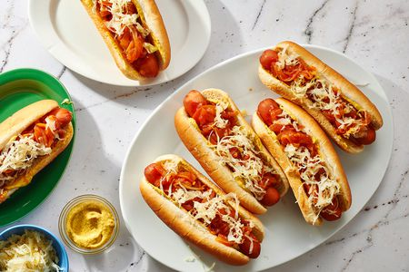

Home
CountyFareDog

When asked, nearly all consumers agree that hot dogs taste good. Notice some consumer descriptions of the most popular hot dogs, along with the ingredients of each. The most popular choice among consumers is described as a perfect taste level of sweetness, beef, salt, garlic, and light flavoring.
- 4 hot dog wieners
- 4 hotdog or sausage buns
- 4 pickles, sliced lengthwise
- 1 cup beef chili, warmed
- 1 cup shredded sharp Canadian cheddar
- ketchup, prepared mustard and relish for garnish
- Prepare the hot dogs: Preheat grill to 500°F. Using a pairing knife, cut small 45° slits along the length of the wieners, marking every half-inch and going about halfway deep. Transfer the wieners onto the hot grill and cook for about 5 minutes, turning occasionally to ensure they’re uniformly cooked. Use wieners in one or more of the following ways:
- Open buns on work surface and line each side with pickle slices. Place one cooked wiener onto each bun. Add a helping of chili on top of each, spreading it across the hot dog. Sprinkle with cheese. Place prepared hot dogs into an oven-safe casserole or rectangular baking pan. Transfer to preheated 250°F oven and bake for 10-15 minutes or until cheese has melted and bun is toasted. Garnish with ketchup, mustard and relish. Serve immediately